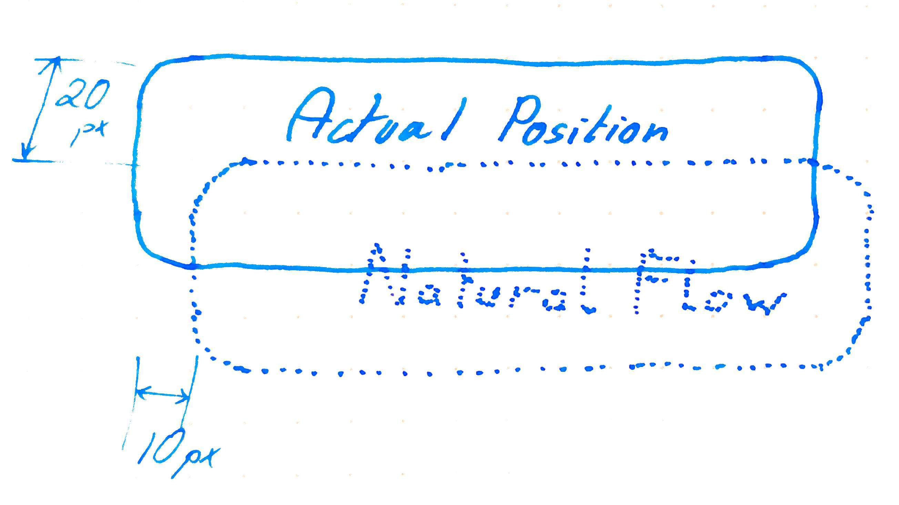

Static vs Relative
2 min read - August 19nd, 2019
Recently I have been dedicating some time to the study of the fundamentals of HTML and CSS. A couple of days ago I wrote a blog post on my very first Front-End Kata.
I decided to add a couple of follow up articles to share a few things I learned through this experience. It isn’t mean to teach the basics of CSS, just meant to share 2 or 3 interesting pieces of info I remembered the most 🙂. Today is the second article of the mini-series.
CSS css±position: css±static vs css±relative
The general concept of positioning different elements on a page with CSS is a vast topic, and not the subject of this article. Even the attribute css±position: alone has 7 different possible values. Today I’d like to simply focus on the difference between css±position: static and css±position: relative.
Without any styling, HTML elements will be placed below one another (not true for inline elements), this is called the Normal Flow.
By default the css±position: CSS property has for value: static.
- In
staticpositioning, the HTML element follows the Normal Flow of the page. - In
relativepositioning, the HTML element also follows the Normal Flow of the page.
So, what is the difference?
Allows offsetting
The first difference between static and relative is that relative allows offsetting. By default, the CSS properties top, bottom, left, right have no effect on the HTML element. They are simply ignored.
Setting css±position: relative, allow these attributes to now have an effect. And this is probably where the name relative comes from: top, bottom, left and right now act as an offset relative to the position the element would have following the Natural Flow.

Acts as an Anchor for absolute positioned children
One other way to position an element is to have it css±position: absolute. With this option, the HTML element will NOT follow the Natural Flow and instead will be positioned at the absolute coordinates given by top, bottom, left and right.
And now comes the tricky and frankly counter-intuitive part, for me at least. By default, css±position: static, elements will NOT act as an Anchor for child elements. In other words, with that structure:
<div class="parent">
<div class="child"></div>
</div>
.parent {
/* By default */
position: static;
width: 400px;
height: 400px;
}
.child {
position: absolute;
bottom: 25px;
width: 200px;
height: 200px;
}
.child will NOT be positioned 25px from the bottom of .parent. It will be positioned 25px from the bottom of the very ROOT document, at the end of the page. In CSS jargon we would say the element .parent is not “positioned”
To make the .parent act as and Anchor for the .child, simply changing css±position: to relative will do the trick. Since we haven’t specified bottom, top, left or right values in the .parent, its position will not change when switching from css±position: static to css±position: relative, see above. But it will now act as an Anchor. And, finally, .child will be positioned 25px from the bottom of .parent. In CSS jargon we would say the element .parent is now “positioned”
See the proof, and experiment for yourself: Codepen - Acting as an Anchor for child elements
And that’s it for today, I hope it was helpful 😃
Until next time — The Professional Beginner